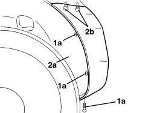
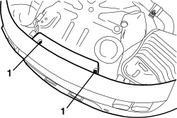
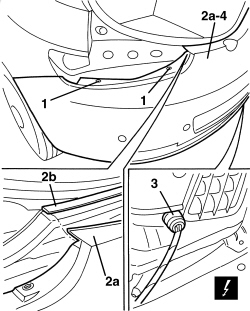

7210E66 R.R. REAR BUMPER
- Path
- Procedures > 72 PANELS AND FRAMES > 7210 REMOVING-REFITTING > 7210E EXTERNAL PARTS > 7210E66 R.R. REAR BUMPER
- Kind
- repair procedure (removal / refitting; the operation number is the code)
- Applies to
- all engines; all production periods
- Interactive page
- https://sloeber94.github.io/elrnDB-aBrrSpdr/en/#/946002741
Applies to: all engines; all production periods
 Removing
Removing
 Refitting
Refitting- Position the vehicle on a lift.
- Remove both rear light clusters.
Op. 5540A44 REAR LIGHT CLUSTER (ONE), LEFT OR RIGHT - R.R.
- Raise the vehicle.
1. Working on both sides of the vehicle, undo wheelarch fastening bolts (1a).
2. Move the wheel arch (2a) slightly and undo bolts (2b) fixing the bumper to the body.

Applies to: all engines; all production periods
1. Undo the lower bolts fixing the bumper.

Applies to: all engines; all production periods
- Lower the vehicle.
1. Working on both sides of the vehicle, undo the upper bumper fixing bolts.
2. Move bumpers (2a) slightly to one side, releasing from retainers (2b).
3. Disconnect the electrical connection.
Description | Component |
|---|---|
BUMPER/REAR COUPLING |
4. Keep the rear bumper.

Applies to: all engines; all production periods
Refitting
Removing- Check that the bumper is not damaged.
- Connect the electrical connection.
- Position the bumper and fit in its seat, doing up the retainers.
- Working on both sides of the vehicle, tighten the upper bumper bolts.
- Raise the vehicle.
- Tighten the lower bolts fixing the bumper.
- Working on both sides of the vehicle, tighten the side bolts securing the unit to the body and then the bolts securing the unit to the wheelarch.
Op. 5540A44 REAR LIGHT CLUSTER (ONE), LEFT OR RIGHT - R.R.
- Remove the vehicle from the lift.